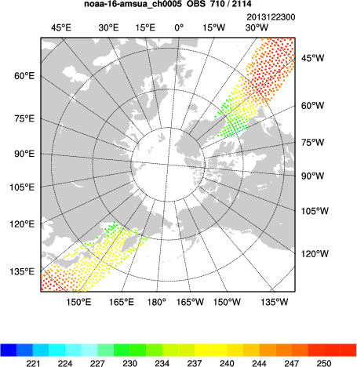

Radiance data assimilation
Reference: Download the tutorial presentation
Source code
Get the pre-compiled code, if you have not done so.
WRFDA/var/build/da_wrfvar.exe is the executable that will be used in this session.
Choice of your working directory
You should run each lesson in a separate directory, so that it will be easier to check for the necessary input files and look for what output files are created after a successful run.
We recommend you create /kumquat/users/${USER}/DA/radiance to be your working directory for this session.
mkdir /kumquat/users/${USER}/DA/radiance
cd /kumquat/users/${USER}/DA/radiance
Input files
For radiance assimilation practice, we will be using a different case than the day 1 exercises, which can be found in /kumquat/wrfhelp/DATA/WRFDA/arctic_tutorial_case. This is a case from late December, 2013, when a major extratropical cyclone impacted northwestern Europe. The domain for this case is plotted at right.
Keep in mind that if you compiled WRFDA yourself, additional settings (specifically, environment variables for BUFR and one or both radiative transfer models) must be specified at compile time to utilize radiance data. This has been done for you in the pre-compiled code.
Radiance assimilation for 3DVAR is much the same procedure as Running WRFDA-3DVAR with conventional observations. To begin this exercise, link/copy the basic input files above that you should have been familiar with by now:
ln -sf /kumquat/users/${USER}/DA/WRFDA/run/LANDUSE.TBL ./LANDUSE.TBL
ln -sf /kumquat/wrfhelp/DATA/WRFDA/arctic_tutorial_case/ob/2013122300/obs_gts_2013-12-23_00:00:00.3DVAR ./ob.ascii
ln -sf /kumquat/wrfhelp/DATA/WRFDA/arctic_tutorial_case/be/be.dat ./be.dat
cp -p /kumquat/wrfhelp/DATA/WRFDA/arctic_tutorial_case/rc/2013122300/wrfinput_d01 ./fg
In addition, the following extra files are required for radiance assimilation:
|
 |
- Radiance data in NCEP BUFR format
ln -fs /kumquat/wrfhelp/DATA/WRFDA/arctic_tutorial_case/ob/2013122300/gdas.1bamua.t00z.20131223.bufr ./amsua.bufr
ln -fs /kumquat/wrfhelp/DATA/WRFDA/arctic_tutorial_case/ob/2013122300/gdas.1bamub.t00z.20131223.bufr ./amsub.bufr
- radiance_info files (you must link the whole directory)
ln -fs /kumquat/users/${USER}/DA/WRFDA/var/run/radiance_info ./radiance_info
- File for variational bias correction
cp /kumquat/users/${USER}/DA/WRFDA/var/run/VARBC.in ./VARBC.in
- Radiative Transfer Model (CRTM or RTTOV) coefficient files (you must link the whole directory)
ln -fs /kumquat/users/${USER}/DA/WRFDA/var/run/crtm_coeffs ./crtm_coeffs
ln -fs /kumquat/wrfhelp/external/rttov11/rtcoef_rttov11/rttov7pred54L ./rttov_coeffs
Edit namelist.input
A sample namelist.input is provided here: namelist.input
If you'd like a challenge, try creating the namelist yourself from scratch. The important settings for this case are listed below. Otherwise you can copy it from /kumquat/wrfhelp/DATA/WRFDA/arctic_tutorial_case/namelist.input.radiance
vi namelist.input (pay special attention to the following radiance-related settings)
&wrfvar1
/
&wrfvar2
/
&wrfvar3
/
&wrfvar4
use_amsuaobs = .true.
use_amsubobs = .true.
/
&wrfvar5
/
&wrfvar6
/
&wrfvar7
/
&wrfvar8
/
&wrfvar9
/
&wrfvar10
/
&wrfvar11
/
&wrfvar12
/
&wrfvar13
/
&wrfvar14
rtminit_nsensor = 3,
rtminit_platform = 1,1,1
rtminit_satid = 16,16,19
rtminit_sensor = 3,4,3
thinning_mesh = 120.0,120.0,120.0
thinning = .true.
qc_rad = .true.
write_iv_rad_ascii = .false.
write_oa_rad_ascii = .true.
rtm_option = 2 (set to "1" for RTTOV)
only_sea_rad = .false.
use_varbc = .true.
use_crtm_kmatrix = .true. (set "use_rttov_kmatrix" instead for RTTOV)
varbc_nbgerr = 5000
/
&wrfvar15
/
&wrfvar16
/
&wrfvar17
/
&wrfvar18
analysis_date="2013-12-23_00:00:00.0000",
/
&wrfvar19
/
&wrfvar20
/
&wrfvar21
time_window_min = "2013-12-22_23:00:00"
/
&wrfvar22
time_window_max = "2013-12-23_01:00:00"
/
&wrfvar23
/
&time_control
/
&fdda
/
&domains
e_we = 181,
e_sn = 181,
e_vert = 41,
dx = 60000,
dy = 60000,
/
&dfi_control
/
&tc
/
&physics
sf_surface_physics = 2,
/
&scm
/
&dynamics
/
&bdy_control
/
&grib2
/
&fire
/
&namelist_quilt
/
&perturbation
/
Run WRFDA
mpirun -np 6 /kumquat/users/${USER}/DA/WRFDA/var/build/da_wrfvar.exe
The test should take about a minute to complete on classroom computers.
Check output
Check analysis increments.
Check statistics.
There are extra diagnostic files when assimilating radiance data:
- 01_oma_*amsu*: Observation minus analysis statistics for each radiance instrument.
- 01_qcstat_*amsu*: Quality control statistics for each radiance instrument.
- VARBC.out: Output file for Variational Bias Correction. This process is described in further detail in the User's Guide
Graphics
|
The script /kumquat/wrfhelp/DATA/WRFDA/TOOLS/scripts/da_rad_diags.ksh can be used to generate a number of helpful plots and graphs for visualizing radiance assimilation statistics.
/kumquat/wrfhelp/DATA/WRFDA/TOOLS/scripts/da_rad_diags.ksh
export START_DATE=2013122300
export END_DATE=2013122300
export CYCLE_PERIOD=12
#
export NUM_PROCS=6 # number of processors used in running WRFDA
export WRFVAR_DIR=/kumquat/users/${USER}/DA/WRFDA
export BUILD_DIR=${WRFVAR_DIR}/var/build
export EXP_DIR=/kumquat/users/${USER}/DA/radiance
export VAR_RUN_DIR1=$EXP_DIR
export VAR_RUN_DIR2=none
...
export FGFILE=$VAR_RUN_DIR1/fg
...
export FILE_PREFIX=01_oma
set -A INSTIDS noaa-16-amsua noaa-16-amsub
Also change the following line (around line 150):
ln -sf $VAR_RUN_DIR1/$DATE/$FILE_PREFIX* . --> ln -sf $VAR_RUN_DIR1/$FILE_PREFIX* .
A number of plots with the file extention ".ncgm" will be created in the "diag" directory. Use the command "idt" to view these .ncgm files. The plot at right shows the observed values for AMSU-A Channel 5 on NOAA-16 (after thinning was applied); you should see many plots just like this for other channels and instruments.
|
 |
You have now completed the basic radiance tutorial! You can either move on to the next exercise, or try the additional practice below:
Additional
- Try assimilating more radiance data for this case. The radiance data for the HIRS3, HIRS4, and MHS instruments, respectively, can be found below:
ln -sf /kumquat/wrfhelp/DATA/WRFDA/arctic_tutorial_case/ob/2013122300/gdas.1bhrs3.t00z.20131223.bufr ./hirs3.bufr
ln -sf /kumquat/wrfhelp/DATA/WRFDA/arctic_tutorial_case/ob/2013122300/gdas.1bhrs4.t00z.20131223.bufr ./hirs4.bufr
ln -sf /kumquat/wrfhelp/DATA/WRFDA/arctic_tutorial_case/ob/2013122300/gdas.1bmhs.t00z.20131223.bufr ./mhs.bufr
In the namelist, change the following settings to read the new files and assimilate the data:
&wrfvar4
use_hirs3obs = .true.
use_hirs4obs = .true.
use_mhsobs = .true.
/
&wrfvar14
rtminit_nsensor = 4,
rtminit_platform = 1,1,1,1,
rtminit_satid = 16,18,18,19,
rtminit_sensor = 0,0,15,15
- Try adding radiance assimilation to the 3dvar case you tested in the first practice session. The radiance data for that case can be found in /kumquat/wrfhelp/DATA/WRFDA/CONUS60/ob/2008020512
- Try changing some of the namelist.input settings (for example, different thinning mesh, different Radiative Transfer Model) and compare the results.
|

{kind=link}